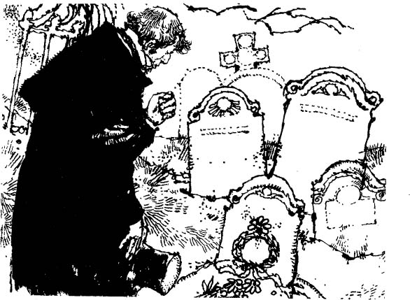

Listen to Part 1:
Tôi mở mắt ra và nhìn xung quanh. Tôi đang ở trong một phòng ngủ nhỏ màu trắng. Cửa sổ nhỏ và có các thanh kim loại chắn ngang. Tôi đang ở đâu vậy?
Tôi cố ngồi dậy, nhưng không thể.
Tôi hét lớn và lập tức có hai người đàn ông lao vào phòng.
‘Cứu tôi,’ tôi kêu lên. ‘Hãy để tôi đi. Tên tôi là Victor Frankenstein. Hãy gửi tin nhắn cho cha tôi ở Geneva. Nói ông ấy đến đây.’
‘Cha con đang ở đây, Victor,’ một giọng nói nhỏ nhẹ trả lời. Cha tôi tiến đến giường tôi và ngồi xuống cạnh tôi. Ông trông già và tóc bạc quá!
‘Ôi, cha, giúp con,’ tôi nói. ‘Đưa con về nhà.’
Cha tôi quay sang hai người đàn ông đó. ‘Đưa bác sĩ vào đây,’ ông nói. ‘Tôi nghĩ là con trai tôi đã khỏe rồi.’
Khi bác sĩ đã khám cho tôi, ông bảo những người đàn ông kia thả tôi ra.
‘Con đã rất ốm, Tiến sĩ Frankenstein,’ ông ấy nói. ‘Có một chuyện kinh khủng đã xảy ra với con. Con đã hét lên và khóc. Con bảo rằng con là kẻ giết người. Con bảo rằng con đã giết chết em trai mình, William, và bạn của mình, Henry Clerval.’
Henry Clerval! Đột nhiên, đầu óc tôi lại trở nên minh mẫn. Tôi nhớ lại mọi thứ.
Listen to Part 2:
‘Henry đã chết. Henry đã chết,’ tôi kêu lên.
‘Vâng,’ cha tôi buồn bã trả lời. ‘Người ta tìm thấy thi thể của cậu ấy trong một ngôi nhà đang cháy. Nhưng khi đó con đang cách xa nhiều dặm. Con không giết cậu ấy. Và khi em trai con bị giết, con đang ở Heidelburg.’
‘Nhưng họ chết là do lỗi của con,’ tôi trả lời.
‘Không đúng đâu,’ cha tôi nói. ‘Con đã bị ốm. Nhưng bây giờ con đã khỏe rồi. Ta sẽ đưa con về Geneva. Elizabeth đang đợi con ở đó.’
Tôi không nhớ gì về chuyến hành trình trở về nhà. Tôi vẫn rất yếu. Tôi ngủ suốt hầu hết thời gian.
Khi lại được nhìn thấy nhà mình, tôi cảm thấy khỏe hơn. Khi nhìn thấy khuôn mặt thân yêu của Elizabeth, tôi cảm thấy vui hơn.
‘Elizabeth, Elizabeth thân yêu của anh,’ tôi nói. ‘Giờ anh đã trở về nhà với em, anh lại thấy khỏe rồi.’
Nhưng tôi vẫn sợ. Quái vật đã giết bạn tôi. Hắn sẽ quay trở lại vào đêm tân hôn của tôi. Hắn sẽ trả thù tôi. Nhưng giờ tôi đã chuẩn bị sẵn sàng. Tôi luôn mang theo một khẩu súng. Nếu nhìn thấy Quái vật, tôi sẽ bắn hắn. Tôi sẽ giết hắn. Những tháng ngày sợ hãi và kinh hoàng sẽ kết thúc.
Tôi thấy Elizabeth trông xanh xao và không vui. Tôi hỏi cô ấy có chuyện gì.
‘Mẹ em rất mong chúng ta sẽ kết hôn. Cha em cũng muốn chúng ta kết hôn,’ cô ấy nói. ‘Tình cảm của em dành cho anh vẫn không thay đổi. Em yêu anh.
Listen to Part 3:
‘Nhưng anh đã đi đến rất nhiều nơi, Victor ạ. Anh đã từng sống ở những thành phố lớn. Có lẽ anh yêu một người phụ nữ khác. Nếu có, anh hãy nói cho em biết.’
‘Anh không hề biết một người phụ nữ nào đẹp bằng em,’ tôi trả lời. ‘Giờ anh lại càng yêu em hơn, Elizabeth ạ. Nhưng có những chuyện khủng khiếp đã xảy ra với anh. Nỗi kinh hoàng vẫn chưa kết thúc. Cuộc sống của anh đang bị đe dọa. Em có thể kết hôn với một người đàn ông có thể sẽ sớm chết không?’
‘Không ai biết mình sẽ chết khi nào đâu,’ Elizabeth trả lời. ‘Nếu anh yêu em, Victor, em sẽ kết hôn với anh. Em sẽ làm anh hạnh phúc.’
Vì vậy, chúng tôi đã định ngày cưới. Khi Quái vật đến giết tôi, tôi sẽ bắn hắn. Sau đó, tôi sẽ kể cho Elizabeth nghe bí mật khủng khiếp của tôi. Tình yêu của cô ấy sẽ cứu tôi và che chở cho tôi.
Sau khi kết hôn, chúng tôi đi hưởng tuần trăng mật. Hành trình bắt đầu bằng thuyền.
Vào ngày cưới, trời rất đẹp. Cả thế giới dường như đều hạnh phúc. Elizabeth trông rất đẹp.
Sau khi kết hôn, chúng tôi đi hưởng tuần trăng mật. Hành trình bắt đầu bằng thuyền. Nắng chiếu rực rỡ trên mặt nước hồ và trên những ngọn núi. Tôi nghe thấy tiếng reo vui của những người bạn khi họ vẫy tay chào tạm biệt chúng tôi.
Đó là những giờ hạnh phúc cuối cùng của tôi. Trời đã nhá nhem tối khi thuyền cập bến một nhà trọ nhỏ. Nhà trọ nằm ven hồ. Nước hồ và những ngọn núi trông rất đẹp.
Đêm đó, chúng tôi ở lại nhà trọ. Sau bữa tối, chúng tôi vào phòng. Tôi chắc rằng Quái vật đang ở gần đó. Nhưng tôi sẽ chiến đấu để giành lấy mạng sống và hạnh phúc của mình. Tôi mang theo súng bên mình.
Listen to Part 4:
Elizabeth thấy tôi sợ hãi.
‘Tại sao anh lại sợ thế, Victor?’ Cô ấy hỏi. ‘Tại sao anh lại mang theo súng? Ai có thể làm hại chúng ta ở nơi xinh đẹp này chứ?’
‘Đây là một đêm vô cùng nguy hiểm,’ tôi trả lời, ‘vô cùng nguy hiểm. Nhưng sau đêm nay, chúng ta sẽ được hạnh phúc bên nhau.’
Tôi bảo Elizabeth ở trong phòng. Tôi bảo cô ấy khóa cửa lại cho đến khi tôi quay lại. Sau đó, tôi lục soát nhà trọ. Tôi vào từng căn phòng. Nhưng Quái vật không có ở đó. Có lẽ sẽ không có chuyện gì xảy ra.
Đột nhiên, tôi nghe thấy một tiếng hét khủng khiếp - và rồi là một tiếng hét khác. Âm thanh đó phát ra từ phòng chúng tôi. Elizabeth đang ở một mình trong phòng. Khi đó, tôi đã hiểu. Quái vật sẽ giết Elizabeth, chứ không phải tôi. Đây chính là sự trả thù của hắn.
Tôi gọi một số người hầu. Cùng nhau, chúng tôi xông vào phòng. Chúng tôi phá cửa ra.
Nhưng đã quá muộn. Elizabeth nằm chết trên giường cưới của chúng tôi.
Nhưng đã quá muộn. Elizabeth nằm chết trên giường cưới của chúng tôi.
Khuôn mặt cô ấy mang vẻ kinh hoàng. Mái tóc đẹp của cô ấy xõa trên cơ thể không còn sức sống. Dấu hằn của bàn tay Quái vật vẫn còn trên cổ trắng nõn của cô ấy. Những ngón tay cứng đờ, nhăn nheo của Quái vật đã xé rách cơ thể cô ấy. Chiếc váy trắng của cô ấy nhuộm đỏ máu.
Listen to Part 5:
Tôi chạy đến cửa sổ và nhìn ra ngoài. Dưới ánh trăng, tôi nhìn thấy hình dáng khủng khiếp của Quái vật. Tôi bắn súng, nhưng Quái vật di chuyển quá nhanh. Một lát sau, hắn đã biến mất sau đám cây.
Mọi người xông vào phòng. Tôi không nhớ mình đã nói hay đã làm gì. Tôi được đưa về Geneva. Tôi trở nên điên loạn vì đau đớn và buồn bã. Khi cha tôi nghe tin này, ông đã ngã bệnh. Vài tuần sau, ông qua đời.
Trong thời gian dài, tôi sống cô độc. Tôi không gặp ai. Có lẽ tôi đã phát điên. Tôi không biết nữa. Một ngày nọ, tôi đến nghĩa trang. Tất cả những người tôi yêu đều nằm ở đó. Tôi nhìn vào ngôi mộ của William. Tôi nhìn vào ngôi mộ của Elizabeth. Và tôi nhìn vào ngôi mộ của cha mẹ mình.

Tôi đứng đó và ngước mắt lên bầu trời. Tôi thốt lên lời nói với Chúa trên Thiên Đàng.
‘Tôi, Victor Frankenstein, bác sĩ ở Geneva, xin thề những lời này. Tôi sẽ dành phần đời còn lại để truy lùng Quái vật. Sau đó, tôi sẽ giết hắn. Tôi, Victor Frankenstein, đã tạo ra Quái vật. Tôi sẽ giết hắn.’
Tôi đứng đó và nhìn những đám mây đen trên đầu. Như thể một lời đáp trả, tôi nghe thấy một tiếng cười lớn khủng khiếp. Âm thanh đó khiến máu tôi lạnh ngắt. Sau đó, tôi nghe thấy giọng nói của Quái vật.
‘Giờ tôi sung sướng lắm,’ Quái vật nói. ‘Ta đã trả thù được. Phần đời còn lại của anh sẽ khổ sở y như ta. Hãy truy lùng ta và tìm ta nếu anh có thể.’